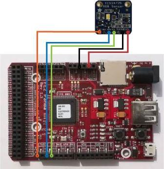

Version: 0.8.0
ColorSensor1334 is connected as followed on FEZ Panda III:

| ColorSensor1334 | Mainboard |
|---|---|
| Vin | 3.3V |
| GND | GND |
| SCL | SCL (D3) |
| SDA | SDA (D2) |
| LED | D0 |
using System.Diagnostics;
using System.Threading;
using Bauland.Adafruit;
using GHIElectronics.TinyCLR.Pins;
// ReSharper disable FunctionNeverReturns
namespace TestColorSensor
{
class Program
{
static void Main()
{
// ColorSensor1334 connected on I2C1 of FEZ Panda III (pin D2 and D3)
ColorSensor1334 colorSensor1334 =new ColorSensor1334(FEZPandaIII.I2cBus.I2c1, FEZPandaIII.GpioPin.D0)
{
Led = true
};
Debug.WriteLine(colorSensor1334.GetId().ToString());
while (true)
{
var color=colorSensor1334.GetRawData();
Debug.WriteLine("Color: C:"+color.Clear+", R:"+color.Red+", G:"+color.Green+", B:"+color.Blue);
Thread.Sleep(500);
}
}
}
}